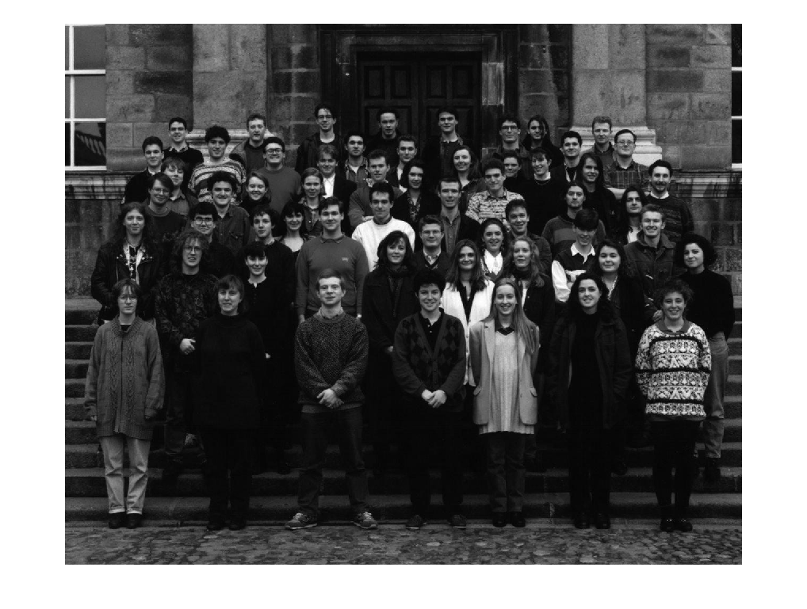
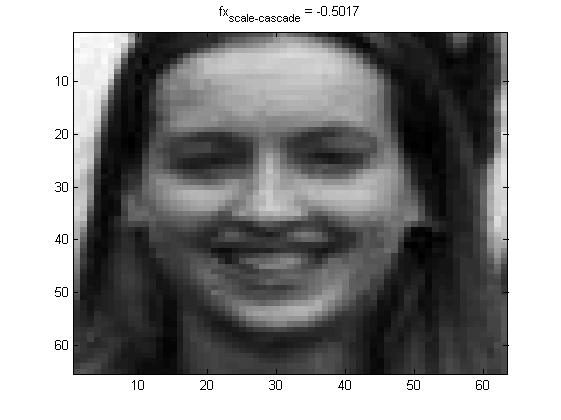
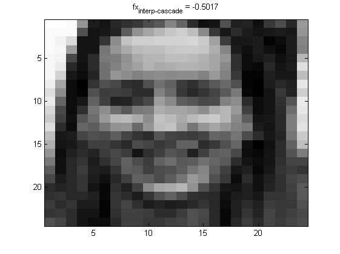

Demo illustrating performances of the cascade tehnics and scaling
Contents
features vs interpolating image
clear, close all , clc , drawnow
load temp_model3
figure(1)
I = (rgb2gray(imread('class57.jpg')));
Icrop = imcrop(I);
Ires = imresize(Icrop , [24 , 24]);
model.cascade_type = 0;
[fx_scale_single , yfx_scale_single] = eval_haar_subwindow(Icrop , model)
[fx_interp_single , yfx_interp_single] = eval_haar_subwindow(Ires , model )
[fx_scale_cascade , yfx_scale_cascade] = eval_haar_subwindow(Icrop , model)
[fx_interp_cascade , yfx_interp_cascade] = eval_haar_subwindow(Ires , model)
model.cascade_type = 1;
[fx_scale_multiexit , yfx_scale_multiexit] = eval_haar_subwindow(Icrop , model)
[fx_interp_multiexit , yfx_interp_multiexit] = eval_haar_subwindow(Ires , model)
figure(2)
imagesc(Icrop)
colormap(gray)
title(sprintf('fx_{scale-single} = %6.4f' , fx_scale_single ));
figure(3)
imagesc(Ires)
colormap(gray)
title(sprintf('fx_{interp-single} = %6.4f' , fx_interp_single));
figure(4)
imagesc(Icrop)
colormap(gray)
title(sprintf('fx_{scale-cascade} = %6.4f' , fx_scale_cascade ));
figure(5)
imagesc(Ires)
colormap(gray)
title(sprintf('fx_{interp-cascade} = %6.4f' , fx_interp_cascade));
figure(6)
imagesc(Icrop)
colormap(gray)
title(sprintf('fx_{scale-multiexit} = %6.4f' , fx_scale_multiexit ));
figure(7)
imagesc(Ires)
colormap(gray)
title(sprintf('fx_{interp-multiexit} = %6.4f' , fx_interp_multiexit));
Warning: Image is too big to fit on screen; displaying at 67%
fx_scale_single =
-0.5017
yfx_scale_single =
-1
fx_interp_single =
-0.5017
yfx_interp_single =
-1
fx_scale_cascade =
-0.5017
yfx_scale_cascade =
-1
fx_interp_cascade =
-0.5017
yfx_interp_cascade =
-1
fx_scale_multiexit =
3.7331
yfx_scale_multiexit =
1
fx_interp_multiexit =
0.9774
yfx_interp_multiexit =
1
  